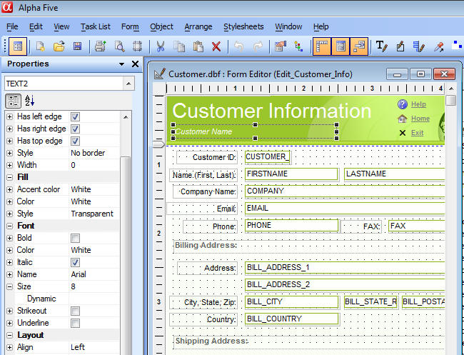
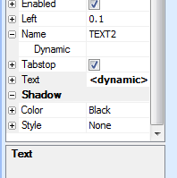
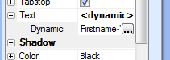
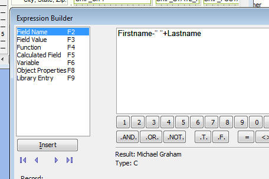
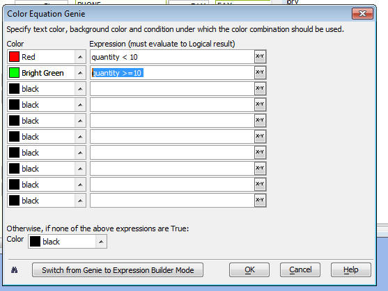

Dynamic Properties
All layout types now support 'Dynamic Properties'. Dynamic Properties allow you to define an expression that sets the value of a Layout property (e.g. the color of the border around a control). Here are some examples of the kind of customization that Dynamic Properties makes incredibly easy (some of these tasks can be accomplished in V9, but require Xbasic programming):
- Disable the edit button on a Form if the 'shipped' field is true
- Change the border on a control to red if the quantity is above some value
- Hide a control, or a group of controls if some field has a certain value
- Alternating row colors on a report
- Highlight rows in a report with values that exceed a threshold value in a special color
To set a dynamic property for an object, you must use the new 'Properties' Dock Panel. (If you don't see the Properties Dock Panel, select Task Lists, Properties from the top menus. If the Properties panel is visible, but closed - you only see a tab on the left or right of the screen with the name 'Properties' in it - then click on the tab and the Dock Panel will expand).
You will notice that almost every property show in the Properties Dock Panel has a + icon to the left of the property name. To set a dynamic property you click the icon to expand the row and then enter an expression that returns the property value.

If a dynamic property has been set for a particular property on an object, the Properties Dock Panel will indicate this by showing an entry of

If you expand the 'Text' property shown in the image above, you can see what the dynamic property for 'text' is:

Clicking on the smart field button opens the expression editor:

The dynamic property for 'text' is an expression:
Firstname - " " + Lastname
So, when the form is run, if the current record has a value of 'John' for Firstname and 'Smith' for Lastname, the text property of the object will be set to 'John Smith'
Depending on the property type, different Genies are opened to help you define the dynamic property expression. For example, for color properties, the following Genie makes it very easy to define complex property expressions:

Report Writer - Alternating Row Colors
One of the most common uses of dynamic properties in the Report writer is to put alternating colors backgrounds on each row of data in the report.
This is done by placing a Frame object in the Detail Section to enclose all of the objects in the Detail Section.
A dynamic property is then set for the frame's background color. The property expression makes use of the mrecno() function and the mod() function.
Contrast mrecno() with the more familiar recno() function. Mrecon() is the logical record number of a row in the report. So for the first record, mrecno() is 1, the second record, it is 2, and so on. Recno(), on the other hand, is the physical record number. So, if a report is not sorted by record number, then the value of recno() for the first record in the report could be any value, but is unlikely to be 1.
The following expression would alternate between white and lime background colors:
if(mod(mrecno(),2)=1,"Lime","White")
The mod() function returns the remainder when the first operand is divided by the second operand. So for the first record in the report, mrecno() returns 1 and mod(1,2) returns 1, so the record is an odd numbered record and the Lime background is used. For the second record in the report, mrecno() returns 2 and mod(2,2) returns 0, so the record is an even numbered record, and the White background is used.
Setting Custom Properties Using Xbasic Automation
The dynamic properties on a Layout can be set using Xbasic automation.
The dynamic property expressions are stored in a CR-LF string in each object's 'dynamic' property.
The following Interactive window session shows how to set and examine an object's dynamic properties:
(Assume that the 'customer_information' form in Alphasports is open in Design mode.)
'Create a 'CardPropertyWrapper' object. This special object is used to set an object's dynamic properties
dim obj as CardPropertyWrapper
'We want to set dynamic properties for the object called 'text3' on the 'customer_information' form.
obj.WrapObject(:customer_Information:text3.this)
'To set a dynamic property you set the .binding.
'Here, we set the font.color to 'red' if the bill_state_region is 'MA', otherwise 'blue'
obj.binding.font.color = "if(bill_state_region = 'MA','red','blue')"
'Here, we set the font.name to 'Arial' if the bill_state_region is 'MA', otherwise 'Tahoma'
obj.binding.font.name = "if(bill_state_region = 'MA','Arial','Tahoma')"
'Now, we examine the object's 'dynamic' property and we see a CR-LF delimited list of property expressions
? obj.dynamic
= font.color=if(bill_state_region = 'MA','red','blue')
font.name=if(bill_state_region = 'MA','Arial','Tahoma')